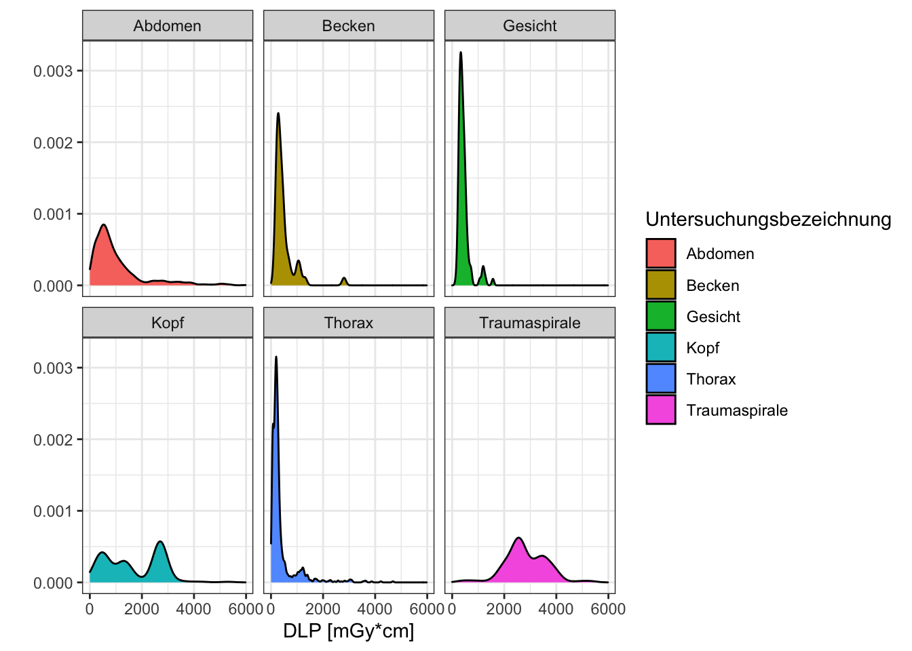

4 Theoretisch ja, praktisch auch! Tests in R
Üblicherweise geht es nach den deskriptiven Statistiken in den meisten Fällen ans Eingemachte - die statistischen Tests. Nehmen wir an, in zwei Gruppen beobachten wir unterschiedliche Mittelwerte. Eine mögliche Erklärung könnte sein, dass der bloße Zufall hier Unterschiede erscheinen lässt, wo in Wirklichkeit keine sind. Eine andere Möglichkeit wäre dann, dass in der Tat Unterschiede zwischen den Gruppen bestehen, und diese nicht alleine dem Zufall zu schulden sind.
Die gesamten theoretischen Grundlagen hier zu wiederholen würde sicher den Rahmen sprengen, insofern beschränken wir uns im Folgenden mit der Durchführung verschiedener statistischer Tests in R. Welcher Test wann der geeignete ist, ist manchmal nicht leicht zu erkennen. Für eine erste grobe Einschätzung kann aber die folgende Tabelle hilfreich sein.
Mögliche statistische Tests in Abhängigkeit der Variablen. (Tabelle ursprünglich aus Wikipedia unter Creative Commons Lizenz)
4.1 Lernziele
- Daten auf Normalverteilung prüfen (Shapiro-Test)
- Einfache statistische Tests rechnen (T-Test, Wilcoxon-Test)
- Effektstärke berechnen und eigene Funktionen schreiben
- ANOVA durchführen
4.2 Normalverteilung prüfen
Wie aus obiger Tabelle ersichtlich ist, kann es mitunter zur Auswahl des korrekten statistischen Tests wichtig sein zunächst zu prüfen, ob die Werte einer Variablen normalverteilt sind. Natürlich können wir versuchen visuell abzuschätzen, ob dies der Fall ist. Für ein fiktives Beispiel wären wir zudem interessiert, die Normalverteilung für einen Wert innerhalb verschiedener Gruppen zu untersuchen. Eine schnelle deskriptive Statistik bzw. Visualisierung könnte wie folgt aussehen.
Wir nutzen hier die skew()-Funktion aus dem psych Paket, um die Schiefe der Verteilung zu erhalten (bei einer Normalverteilung nahe 0, bei positiven Werten ist der Ausläufer nach rechts länger, bei negativen Werten der Ausläufer nach links).
## # A tibble: 6 x 2
## untersuchung schiefe_dlp
## <chr> <dbl>
## 1 Abdomen 2.10
## 2 Becken 3.39
## 3 Gesicht 2.57
## 4 Kopf 0.223
## 5 Thorax 3.58
## 6 Traumaspirale 0.0290daten %>%
ggplot(aes(x = dlp, fill = untersuchung)) +
geom_density() +
facet_wrap(vars(untersuchung)) +
labs(x = "DLP [mGy*cm]",
y = "",
fill = "Untersuchungsbezeichnung") +
theme_bw()
Wir sehen hier bereits, dass die DLP-Werte für Untersuchungen des Kopfes und bei Traumaspiralen vermutlich normalverteilt sind. Doch um wirklich sicher zu gehen, sollte ein entsprechender statistischer Test verwendet werden. Für diese Frage bietet sich der Shapiro-Wilk-Test an.
Der Shapiro-Wilk-Test nimmt als sog. Nullhypothese an, dass die Daten normalverteilt sind. Ein kleiner p-Wert zeigt in diesem Fall dann entsprechen an, dass die Alternativhypothese anzunehmen ist, also dass die Daten nicht normalverteilt sind. Erfreulicherweise findet sich für die meisten statistischen Tests in R eine entsprechend benannte Funktion. Um also bspw. die DLP-Werte im gesamten Datensatz auf Normalverteilung zu untersuchen, können wir einfach die Funktion shapiro.test() nutzen.
##
## Shapiro-Wilk normality test
##
## data: daten$dlp
## W = 0.8234, p-value < 2.2e-16In diesem Fall zeigt also der p-Wert < 2,2 x 10-16 an, dass die Alternativhypothese angenommen werden sollte - die DLP-Werte im Gesamtdatensatz also nicht normalverteilt sind.
4.2.1 Ein kurzer Ausflug in Ergebnisobjekte
In vielen Fällen sind die Ausgaben solcher statistischen Tests etwas unintuitiv formatiert und die einzelnen Werte weiterzuverwenden erscheint zunächst schwierig. Es lohnt daher an dieser Stelle ein kurzer Ausflug, denn wir können durchaus auf Einzelteile der Ausgabe direkt zugreifen. Um einen etwas tieferen Einblick zu erhalten, speichern wir zunächst das Ergebnis der shapiro.test() Funktion in einer Variablen und schauen uns die Struktur der Variablen an.
## List of 4
## $ statistic: Named num 0.823
## ..- attr(*, "names")= chr "W"
## $ p.value : num 8.48e-46
## $ method : chr "Shapiro-Wilk normality test"
## $ data.name: chr "daten$dlp"
## - attr(*, "class")= chr "htest"Wie man erkennen kann, handelt es sich um eine Liste von Werten, die einfach—wenn sie nicht in einer Variablen gespeichert sind—gemeinsam auf der Konsole ausgegeben werden. Das Dollarzeichen $ in der Ausgabe der str() Funktion zeigt hier aber bereits an, dass wir auch einzelne Teile des Ergebnisses direkt referenzieren können, ähnlich den Spalten eines Dataframes.
## [1] 8.48211e-46## [1] TRUEWären wir also bspw. in obigem fiktiven Beispiel daran interessiert die Normalverteilung innerhalb der Subgruppen zu prüfen, könnten wir in Tidyverse-Syntax eine Verkettung von Befehlen schreiben, an deren Ende eine ansprechend formatierte Tabelle stünde, die in einer Spalte auch gleich prüft, ob der p-Wert unterhalb des Signifikanzniveau von 0.05 liegt.
daten %>%
group_by(untersuchung) %>%
summarise(shapiro_p.wert = shapiro.test(dlp)$p.value) %>%
mutate(signifikant_0.05 = shapiro_p.wert < 0.05)## # A tibble: 6 x 3
## untersuchung shapiro_p.wert signifikant_0.05
## <chr> <dbl> <lgl>
## 1 Abdomen 1.48e-30 TRUE
## 2 Becken 4.46e-10 TRUE
## 3 Gesicht 1.01e-12 TRUE
## 4 Kopf 3.06e-20 TRUE
## 5 Thorax 4.29e-41 TRUE
## 6 Traumaspirale 5.19e- 5 TRUEWir sehen also, dass—entgegen der ursprünglichen Annahme—auch in den Gruppen, die rein visuell und deskriptiv normalverteilt erschienen (Kopf und Traumaspirale), in Wirklichkeit keine Normalverteilung vorliegt.
4.3 T-Test und Wilcoxon-Test
Nachdem nun die Daten auf Normalverteilung geprüft wurden, können wir mit dem entsprechenden statistischen Test untersuchen, ob zwischen einzelnen Gruppen ein signifikanter Unterschied in der Verteilung der Werte für eine Variable existiert. In unserem Falle wäre, da die Daten nicht normalverteilt sind, der Wilcoxon-Mann-Whitney-Test die richtige Wahl. Ähnlich wie für den Shapiro-Wilk-Test shapiro.test() existiert in diesem Falle die Funktion wilcoxon.test(). Die Funktion erwartet als Parameter entweder zwei Vektoren mit Zahlenwerten (oder ein Dataframe und eine sogenannte Formel, aber dazu später). Für ein einfaches Beispiel wollen wir den Vergleich der DLP-Werte von Thorax-Untersuchungen mit denen von Abdomen-Untersuchungen untersuchen. Hierzu ziehen wir uns zunächst die entsprechenden Werte aus dem Dataframe heraus und speichern sie in separaten Variablen, anschließend können diese Vektoren der Funktion wilcoxon.test() übergeben werden. Im Übrigen geht R bei T-Test und Wilcoxon-Test davon aus, dass es sich um unverbundene Stichproben handelt. Sicherheitshalber sollte man sich aber angewöhnen, dies auch explizit mithilfe des Parameters paired = FALSE anzugeben.
# erst die Funktion pull() extrahiert aus dem Dataframe einen einfachen Vektor
dlp.abdomen <- daten %>% filter(untersuchung == "Abdomen") %>% pull(dlp)
dlp.thorax <- daten %>% filter(untersuchung == "Thorax") %>% pull(dlp)
wilcox.test(dlp.abdomen, dlp.thorax, paired = FALSE)##
## Wilcoxon rank sum test with continuity correction
##
## data: dlp.abdomen and dlp.thorax
## W = 445818, p-value < 2.2e-16
## alternative hypothesis: true location shift is not equal to 0Wie erwartet, zeigt hier der p-Wert < 2,2 x 10-16 an, dass die DLP-Werte von Thorax-Untersuchungen und Abdomen-Untersuchungen signifikant verschieden sind.
Genau so einfach ließe sich entsprechend auch ein T-Test t.test() rechnen, der zwar in diesem Falle vielleicht nicht optimal wäre, weil wie bereits besprochen keine Normalverteilung der Werte vorliegt, aber das ignorieren wir einmal.
##
## Welch Two Sample t-test
##
## data: dlp.abdomen and dlp.thorax
## t = 14.719, df = 1032.2, p-value < 2.2e-16
## alternative hypothesis: true difference in means is not equal to 0
## 95 percent confidence interval:
## 554.7071 725.3559
## sample estimates:
## mean of x mean of y
## 1037.5276 397.49614.3.1 Ein kurzer Ausflug in Formeln
Mit Formeln werden in R nicht übliche Formeln in der Art f(x) = mx + b bezeichnet, sondern bei der Definition von statistischen Tests oder Modellen ein Ausdruck, der beschreibt welche Zielvariable von welchen Einflussvariablen abhängen soll. Eine Formel in R besteht immer aus einer Tilde ~ und einem oder mehreren Ausdrücken, die jeweils rechts (RHS = right hand side) bzw. links (LHS = left hand side) der Tilde ~ stehen. Die Zielvariable steht dabei links (LHS) und die möglichen Einflussvariablen rechts (RHS).
Wollten wir also beispielsweise ausdrücken, dass wir das DLP in Abhängigkeit der Untersuchungsbeschreibung auf statistische Signifikanz untersuchen wollen würden, könnten wir das folgendermaßen ausdrücken: dlp ~ untersuchung. Wollten wir also in unserem Beispiel die beiden Gruppen Thorax und Abdomen vergleichen, könnten wir den Ausdruck daten %>% filter(untersuchung %in% c("Abdomen", "Thorax")) nutzen, um ein Dataframe zu erzeugen, das nur diese beiden Gruppen enthält. Bei dem Aufruf der Funktion t.test() müssten wir dieses Dataframe als Parameter data = übergeben und als ersten Parameter die oben genannte Formel dlp ~ untersuchung.
# auch hier hilft eine Schreibweise mit Zeilenumbrüchen nicht den Überblick zu verlieren
t.test(
dlp ~ untersuchung,
data = daten %>% filter(untersuchung %in% c("Abdomen", "Thorax")),
paired = FALSE
)##
## Welch Two Sample t-test
##
## data: dlp by untersuchung
## t = 14.719, df = 1032.2, p-value < 2.2e-16
## alternative hypothesis: true difference in means is not equal to 0
## 95 percent confidence interval:
## 554.7071 725.3559
## sample estimates:
## mean in group Abdomen mean in group Thorax
## 1037.5276 397.4961Das mag zunächst etwas kompliziert wirken. Aber solche Schreibweisen haben den Vorteil, dass nicht für jeden Test neue Variablen definiert werden müssen, was bei langen und komplizierten Auswertungen schonmal dazu führen kann, dass man den Überblick verliert. Für einfache statistische Tests ist die Formelschreibweise nicht unbedingt nötig, und beide Herangehensweisen liefern identische Ergebnisse. Im späteren Kapitel zu Machine Learning werden wir allerdings um die Verwendung dieser Formelschreibweise nicht herum kommen.
4.3.2 Ein kurzer Ausflug in Funktionen
Im Live-Webinar hatten wir darüber gesprochen, dass bspw. beim T-Test neben dem p-Wert auch die sog. Effektstärke relevant sein kann. Zwar existiert für R beispielsweise das Paket effsize, das Funktionen enthält um die Effektstärke zu berechnen, aber gelegentlich kommt vielleicht man an einen Punkt, wo auf die Schnelle kein Paket zu finden ist, dass genau die Funktion enthält, die man sucht. Für solche Fälle bietet R die Möglichkeit, eigene Funktionen zu definieren, die der Vollständigkeit hier genannt werden soll, obwohl diese spezielle Funktionalität für den Anfang vielleicht etwas komplex ist.
Für ein kurzes Beispiel wollen wir einen Spezialfall betrachten, in dem für unverbundene Stichproben gleicher Gruppengröße die Effektstärke anhand von T-Statistik und df-Wert des T-Testes brechnet werden kann. Wir wollen dabei das Ergebnisobjekt der Funktion t.test() nehmen und direkt die Werte für T-Statistik und df extrahiert und sodann die Effektstärke berechnet werden kann.
Eine Funktion kann einfach mithilfe der Funktion function() definiert werden, und in einer Variable gespeichert werden, die genutzt werden kann, um die Funktion aufzurufen. Innerhalb der runden Klammern () von function() können Parameter definiert werden, die dann innerhalb der Funktion verfügbar sind. Beim Aufruf kann auch an selbst definierte Formeln mithilfe des Verkettungsoperators %>% ein Parameter übergeben werden. Die Möglichkeiten, die sich hierdurch ergeben sind schier endlos…
meine_cohens_d_funktion <- function(ergebnis_t.test) {
# Die Funktion unname() ist hier für eine schönere Ausgabe am Ende
# der Funktion nötig. Kann aber auch ignoriert werden.
t_statistik <- ergebnis_t.test$statistic %>% unname()
df_wert <- ergebnis_t.test$parameter %>% unname()
# Formel für Cohens d
2 * t_statistik / sqrt(df_wert)
}
t.test(
dlp ~ untersuchung,
data = daten %>% filter(untersuchung %in% c("Abdomen", "Thorax")),
paired = FALSE
) %>% meine_cohens_d_funktion()## [1] 0.9162841